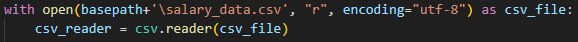
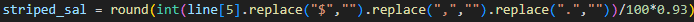
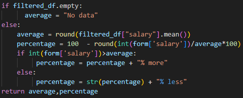
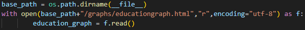

To make sure that the whole project would work, I made sure to conduct many unit tests on different parts of the code along with whole system wide tests to make sure that all these units worked together and did not throw any unexpected errors.
When I was writing the script to clean the data, I encountered a number of problems when testing the program at first it completely broke and I could not figure out why at all as it turns out I had to specify the encoding type that it should use when it is trying to open these files, so you can see in figure 4.1 I specified that the file is in the utf-8 format.
Figure 4.1
After finishing the code for the data cleaning when I ran it I looked at the output and realised that when I removed the decimal place I didn't take off the 2 0s so I divided the figure by 100 to fix this, seen in figure 4.2.
Figure 4.2
While carrying out unit testing on the user recommendation part of the website I realised that if I put in a value that led to the filtered data set being empty this would then through an error that would crash the website so to prevent this I had to make sure it would show that there was no data available in this range. This can be seen in figure 4.3
Figure 4.3
When I carried system tests on the website I found that the graphs were not being displayed at all, it turns out that the files were not being opened correctly and I was getting an error message saying that there was no file found. So to fix this I used the os library to find the exact path as the relative path was not working correctly this can be seen in figure 4.4
Figure 4.3
